山の日は三瓶山に登りました。
2018/08/11
初心者なので三瓶山山頂への最短コース、姫逃池登山道で上りました。
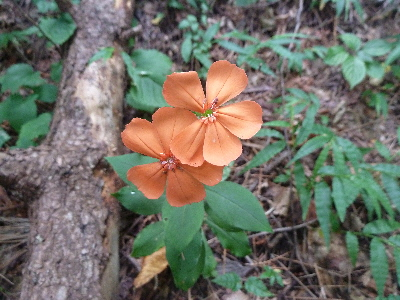
三瓶山ガイドマップによると、フシグロセンノウって名前の花です。
ガイドマップといっても簡単な観光用のリーフレットです。花の名前を私は知らないので役に立ちました。また登る機会があったら持っていこうと思います。
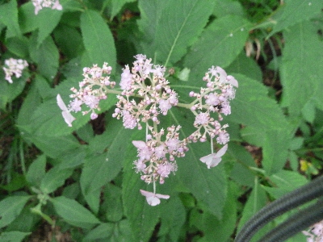
コアジサイです。この花が一番多かったです。もう見頃は終わっていますがまだ綺麗でした。
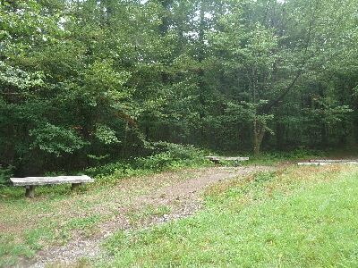
ひろびろとした休憩所です。途中ベンチは何か所もありましたが、スペースが広いのはここだけでした。
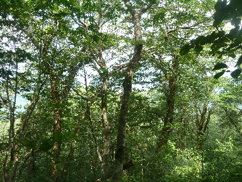
登山道の景色はずーっと上の写真みたいな感じです。
山の北側の林を登るので日差しはありませんが、風もありませんでした。
ムシムシして暑い山林をひたすら登ります。
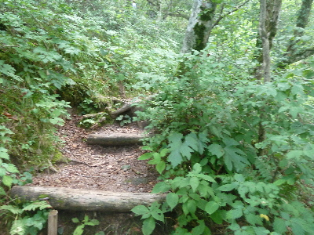
国立公園っていうくらいなので、道が立派で歩きやすいんじゃないかと思って登ったんですが、せまかったです。
人とすれ違う時は道を譲りあいます。追い越すとき、追い越されるときも譲りありです。
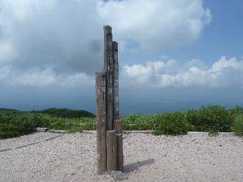
山頂に着くと急に視界が広がしました。
山頂は木が生えてないんですね。
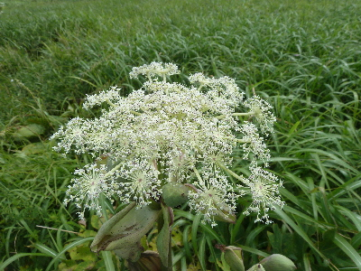
木の代わりに草花が一面に生えてました。
上の巨大な花は何て名前でしょうね。これはガイドマップに載っていませんでした。花壇とかでも見る気がする。
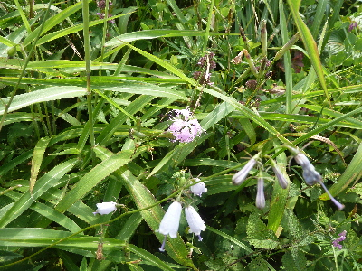
カワラナデシコ、ツリガネニンジン等、ごちゃごちゃに咲いてました。
ナチュラルに綺麗な花があちこちで咲いてる風景っていいですね。
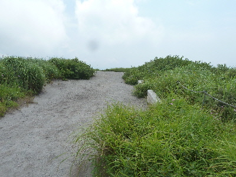
山頂の道はなぜ草が生えていないんだろう？
ちょっと違和感を感じました。
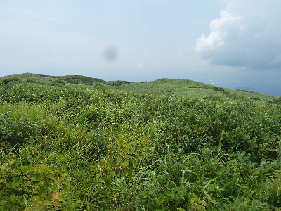
他は一面草なんですが。
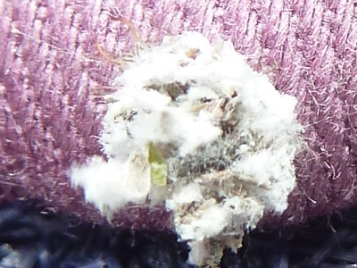
風に乗って、ふこふこの綿くずの小さい塊が飛んできました。
この塊がちょこちょこ動きます。
クサカゲロウの幼虫だそうです。
肉眼では気付きませんでしたが、写真で見ると左上にハサミっぽいのが見えますね。
今日は自然を満喫できて楽しかったです。
次はもうちょっと涼しい時期に登りたいかな。